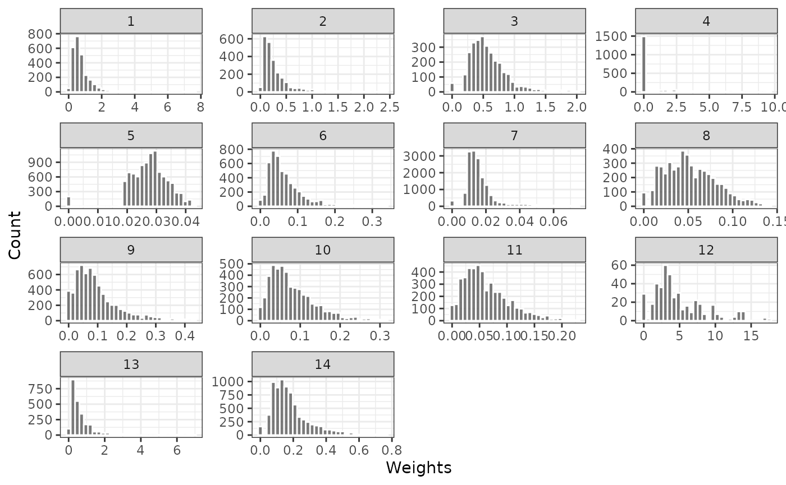
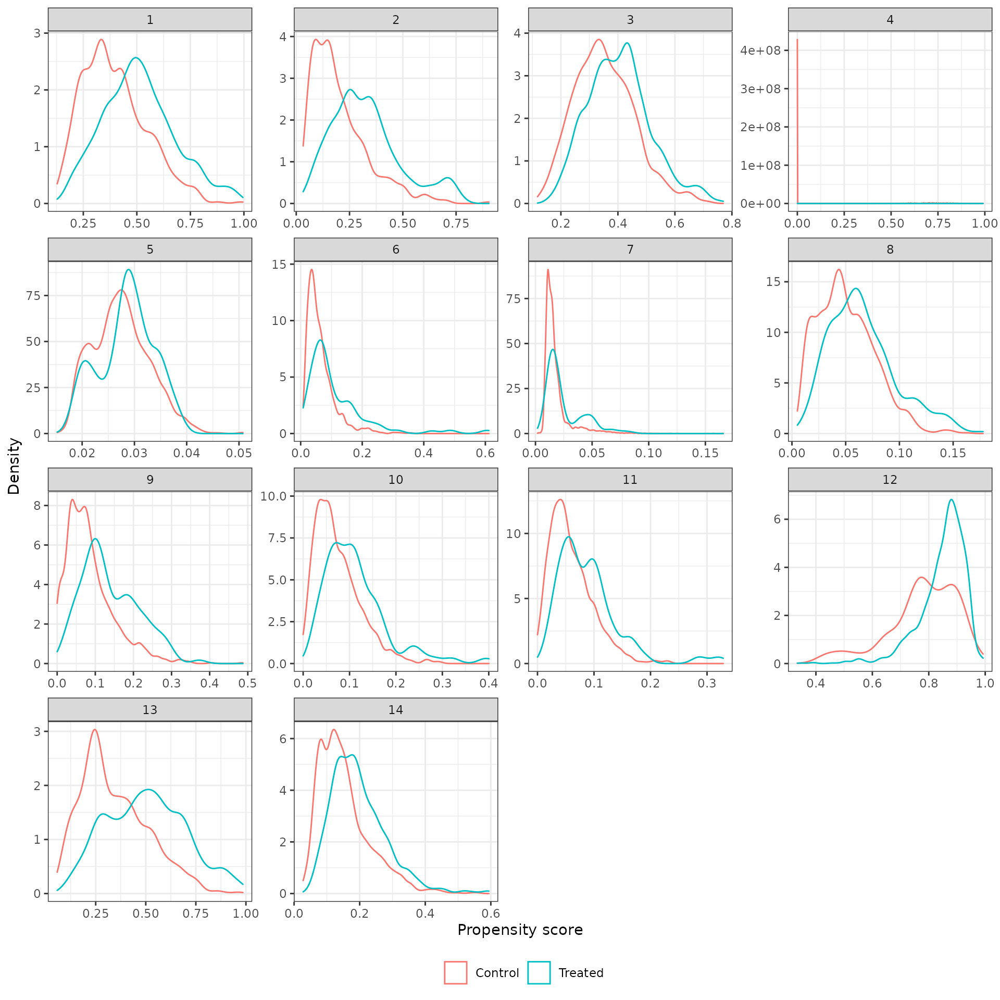
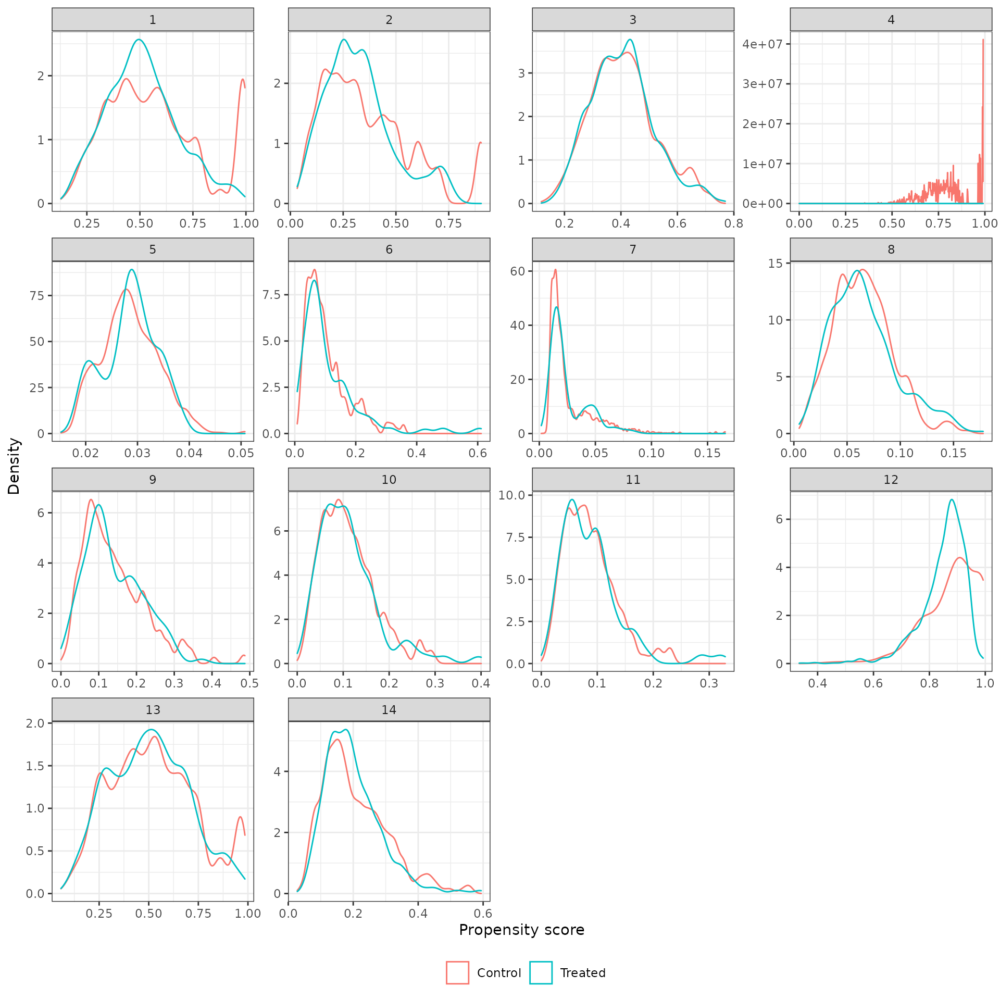
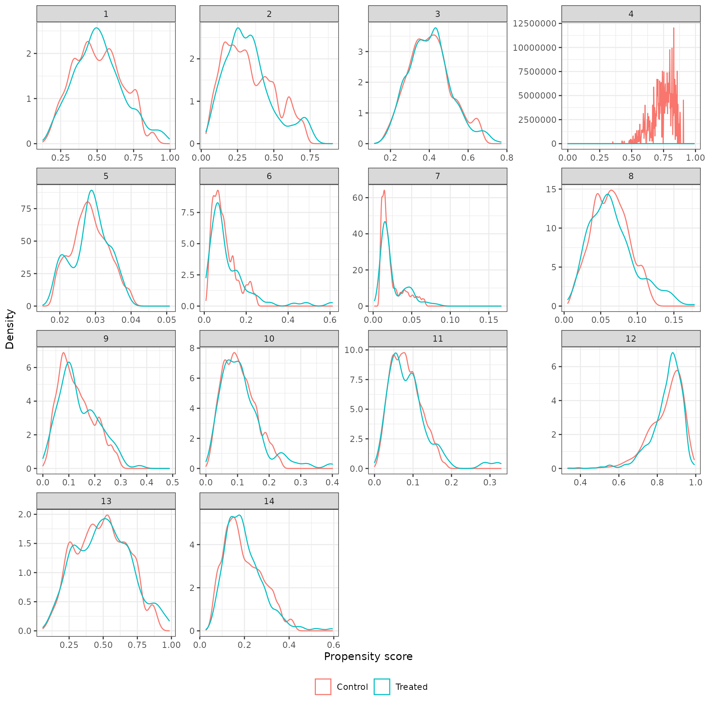
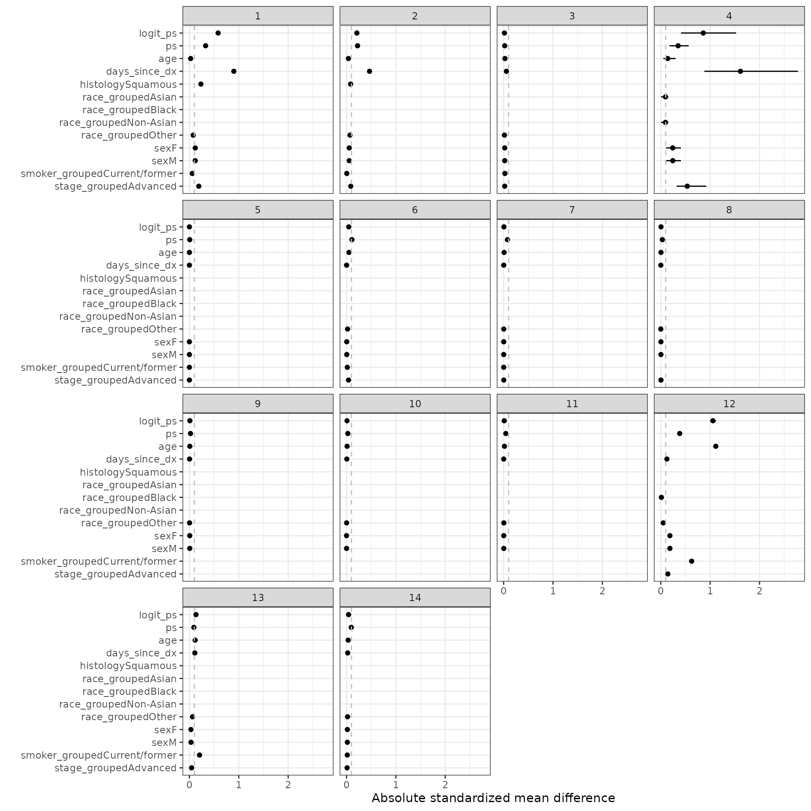
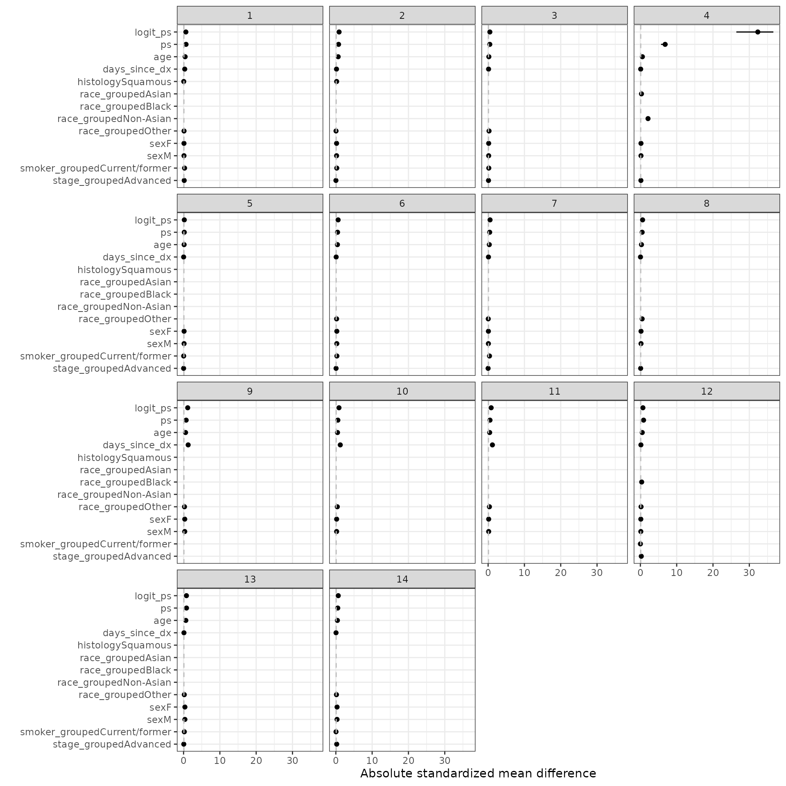
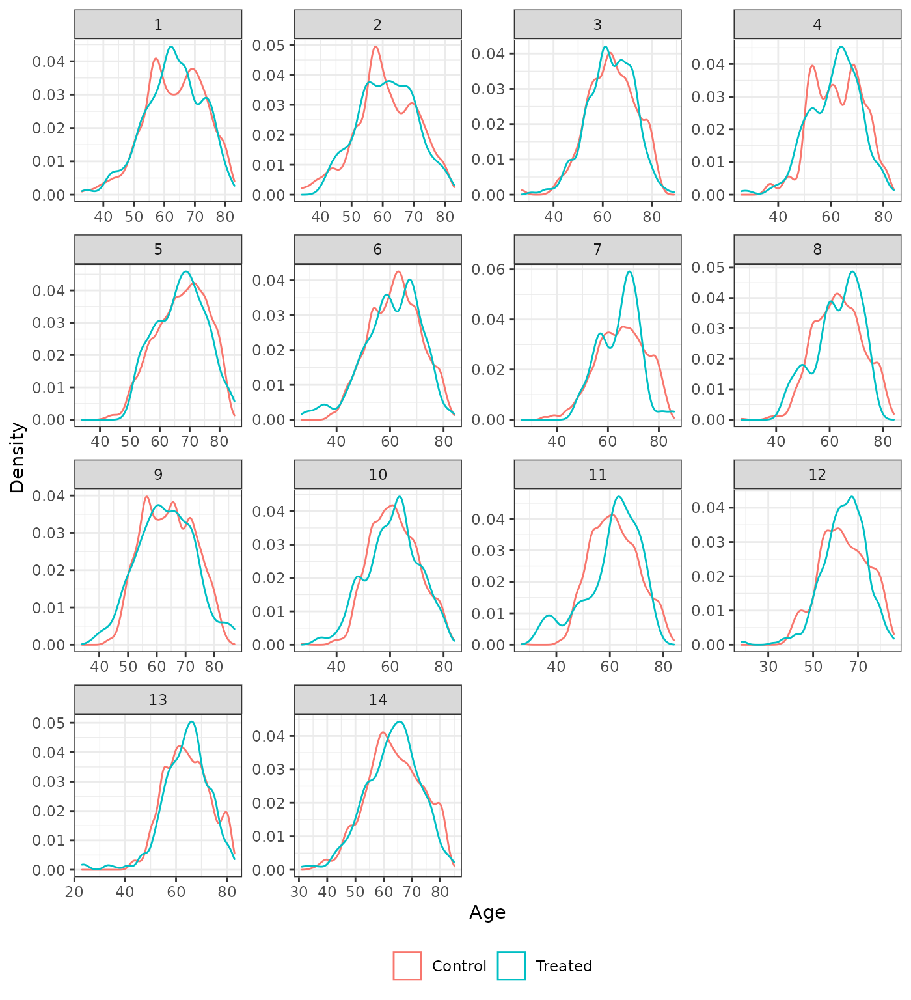
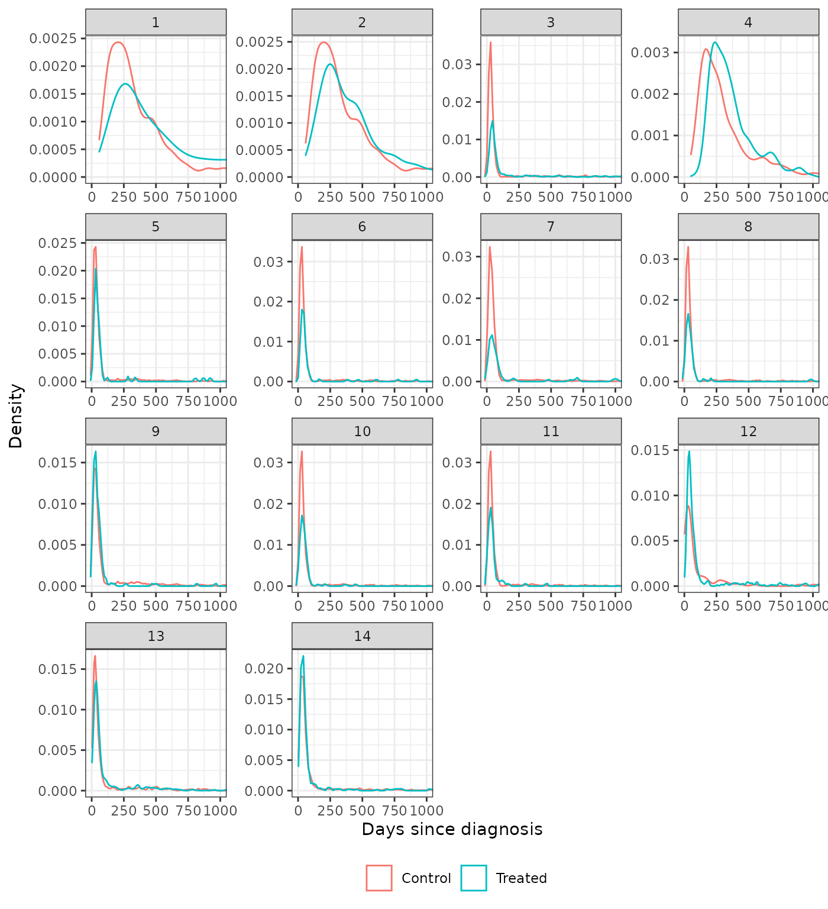
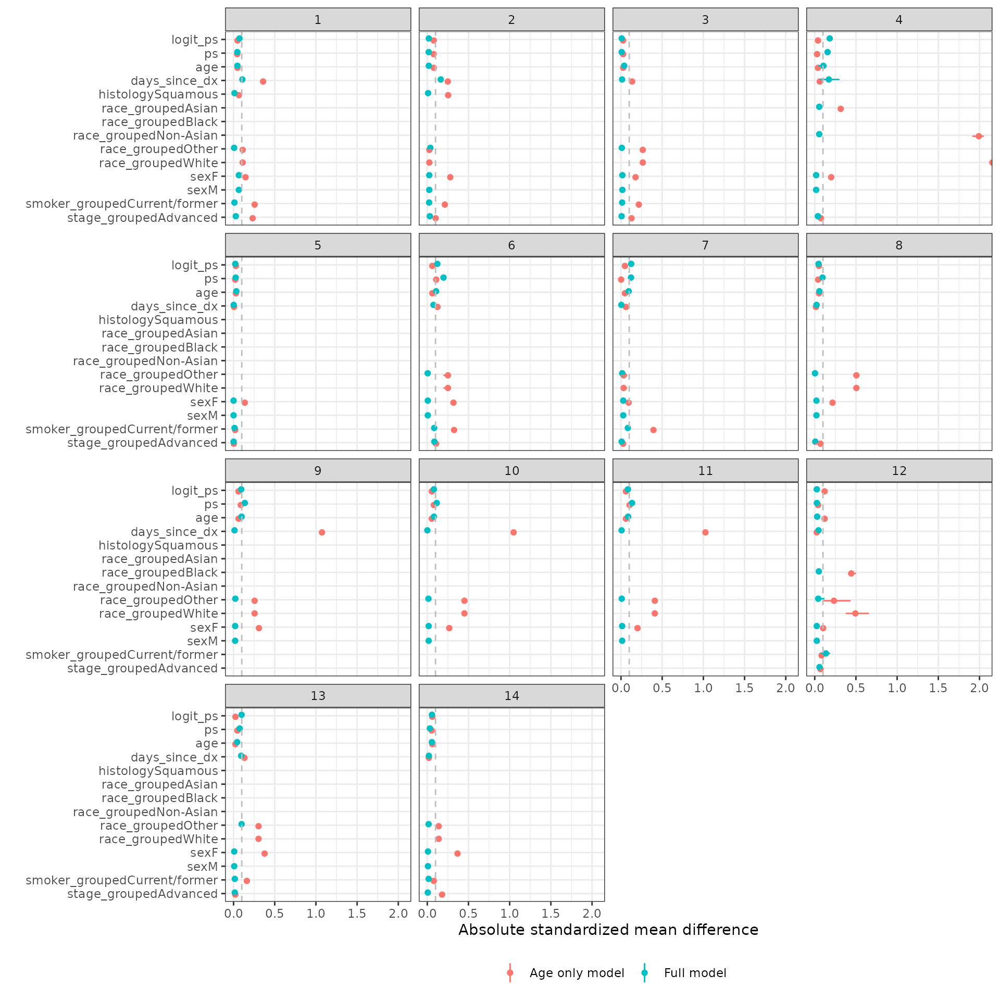

vignettes/03-balance.Rmd
03-balance.RmdThe objectives of this analysis are to estimate the propensity score, weight the external control population so that its covariate distribution matches the clinical trial, and assess balance after weighting. Both inverse probability of treatment weighting with weights constructed for estimation of the average treatment effect for the treated (i.e., IPTW-ATT weights) and matching techniques are employed. The following R packages are used.
Logistic regression is used to estimate the propensity score. The variables in the columns of the table below are considered for inclusion in the model. A 1 in the table indicates that a given variable was used for a particular analysis and a 0 indicates that it was not.
ecmeta.nsclc::psmodel_specification %>% select(-interaction) %>% html_table() %>% scroll_box(width = "100%")
| analysis_num | analysis_id | sex | race_grouped | age | smoker_grouped | histology | stage_grouped | days_since_dx |
|---|---|---|---|---|---|---|---|---|
| 1 | nct02008227_fi_1 | 1 | 1 | 1 | 1 | 1 | 1 | 1 |
| 2 | nct01903993_fi_1 | 1 | 1 | 1 | 1 | 1 | 1 | 1 |
| 3 | nct02366143_fi_1 | 1 | 1 | 1 | 1 | 0 | 1 | 1 |
| 4 | nct01351415_fi_1 | 1 | 1 | 1 | 0 | 0 | 1 | 1 |
| 5 | nct01519804_fi_1 | 1 | 0 | 1 | 1 | 0 | 1 | 1 |
| 6 | nct01496742_fi_1 | 1 | 1 | 1 | 1 | 0 | 1 | 1 |
| 7 | nct01496742_fi_2 | 1 | 1 | 1 | 1 | 0 | 1 | 1 |
| 8 | nct01366131_fi_1 | 1 | 1 | 1 | 0 | 0 | 1 | 1 |
| 9 | nct01493843_fi_1 | 1 | 1 | 1 | 0 | 0 | 0 | 1 |
| 10 | nct01493843_fi_2 | 1 | 1 | 1 | 0 | 0 | 0 | 1 |
| 11 | nct01493843_fi_3 | 1 | 1 | 1 | 0 | 0 | 0 | 1 |
| 12 | nct02367781_fi_1 | 1 | 1 | 1 | 1 | 0 | 1 | 1 |
| 13 | nct02367794_fi_1 | 1 | 1 | 1 | 1 | 0 | 1 | 1 |
| 14 | nct02657434_fi_1 | 1 | 1 | 1 | 1 | 0 | 1 | 1 |
We then create formulas using these variables for the propensity score models. We considered natural cubic splines (splines::ns()) for the continuous variables and an interaction between cancer stage and time since initial diagnosis. Both resulted in more extreme weights and did not improve balance, so they are not included here.
analysis <- readRDS("analysis-impute.rds") analysis <- add_ps_formula(analysis, spline = FALSE, interaction = FALSE)
Separate logistic regressions are fit for each of the 14 analyses and each of the 5 multiply imputed datasets.
analysis$ps_model <- map2(analysis$ps_formula, analysis$impute_xdata, function (x, y) { fit_ps_mi(formula = x, data = y) })
The logistic regression models are used to predict estimate the propensity scores.
analysis$ps <- map(analysis$ps_model, predict_ps)
The propensity score models are used to predict propensity scores and generate weights for each patient. Both IPTW and 1:1 nearest neighbor matching are used to generate the weights. In cases where the number of external control patients was less than the number of trial patients, matching is performed with replacement; otherwise, matching is performed without replacement. Matching was conducted with and without a caliper (of 0.25 standard deviations of the linear propensity score) and IPTW was conducted with and without trimming (i.e., excluding external control patients with values of the propensity less than the 1st percentile or above the 99th percentile).
ps_methods <- c( "iptw_att", "iptw_att_trim", "match_nearest", "match_nearest_caliper", "match_genetic", "match_genetic_caliper" ) analysis$psweight <- psweight(analysis$ps, methods = ps_methods, progress = TRUE, print.level = 0, outfile = "psweight_out", pop.size = 1000)
## Loading required namespace: rgenoudpsw <- rbind_list(analysis$psweight, id = "analysis_num", integer_id = TRUE)
We focus our assessments on the IPTW-ATT weighted models, which we consider our primary analysis. A comparison of all propensity score methods is available in the sensitivity analyses below.
The distribution of weights for the external control patients are plotted to check for the potential influence of extreme propensity scores. Plots are provided for weights generated with and without trimming. No weights are provided for the trial patients since they are all given a weight of 1.
plot_weights(psw, method = "iptw_att")
plot_weights(psw, method = "iptw_att_trim")

Density plots of the propensity score in each analysis for the treated (trial) and external control patients are shown below. We begin by plotting the unadjusted propensity score (i.e., without weighting).
plot_ps(psw, method = "unadjusted")

We then plot weighted propensity score with and without trimming.
plot_ps(psw, method = "iptw_att")

plot_ps(psw, method = "iptw_att_trim")

We define the standardized mean difference (SMD) as \((\mu_t - \mu_c)\sigma\) where \(\mu_t\) is the weighted mean among the treated patients, \(\mu_c\) is the weighted mean among the control patients, and \(\sigma\) is the standard deviation among the treated patients in the unweighted sample.
smd_out <- smd(psw)
SMDs are plotted for the estimated propensity score as well as each term in the propensity score model. We consider IPTW-ATT weights with and without trimming. Line ranges represent the minimum and maximum values from the multiple imputations and the point is the median value.
autoplot(smd_out, method = "iptw_att")

autoplot(smd_out, method = "iptw_att_trim")
For comparison, we also plot SMDs where \(\mu_t\) and \(\mu_c\) are not weighted.
autoplot(smd_out, method = "unadjusted")

We also plot the distributions of the continuous covariates to assess balance on high order moments. We compare the trimmed IPTW-ATT weighted distributions to the unadjusted distributions. Recall that time since diagnosis was not included as a covariate in analysis 5.
plot_density(psw, method = "iptw_att_trim", var = "age", xlab = "Age")

plot_density(psw, method = "unadjusted", var = "age", xlab = "Age")
plot_density(psw, method = "iptw_att_trim", var = "days_since_dx", xlab = "Days since diagnosis") + coord_cartesian(xlim = c(0, 1000))
plot_density(psw, method = "unadjusted", var = "days_since_dx", xlab = "Days since diagnosis") + coord_cartesian(xlim = c(0, 1000))

Two sensitivity analyses are performed. First, we compare the different propensity score methods. Comparisons are made by evaluating SMDs for the logit of the propensity scores. Second, we consider a very simple propensity score model that only includes one covariate – age. We then compared SMDs between the fully specified propensity score model and the age only model when using IPTW-ATT weights with trimming.
f_age <- treat ~ age analysis$ps_model_age <- map(analysis$impute_xdata, function (x) { fit_ps_mi(formula = f_age, data = x) }) analysis$ps_age <- map(analysis$ps_model_age, predict_ps) psw_age <- psweight(analysis$ps_age, methods = "iptw_att_trim") %>% rbind_list(id = "analysis_num", integer_id = TRUE) smd_age <- smd(psw_age, x_vars = get_ps_vars()) autoplot(smd_list(`Full model` = smd_out, `Age only model` = smd_age), method = "iptw_att_trim")

saveRDS(analysis, file = "analysis-balance.rds")
## R version 4.0.0 (2020-04-24)
## Platform: x86_64-pc-linux-gnu (64-bit)
## Running under: Ubuntu 18.04.5 LTS
##
## Matrix products: default
## BLAS: /usr/lib/x86_64-linux-gnu/openblas/libblas.so.3
## LAPACK: /usr/lib/x86_64-linux-gnu/libopenblasp-r0.2.20.so
##
## locale:
## [1] LC_CTYPE=en_US.UTF-8 LC_NUMERIC=C
## [3] LC_TIME=en_US.UTF-8 LC_COLLATE=en_US.UTF-8
## [5] LC_MONETARY=en_US.UTF-8 LC_MESSAGES=en_US.UTF-8
## [7] LC_PAPER=en_US.UTF-8 LC_NAME=C
## [9] LC_ADDRESS=C LC_TELEPHONE=C
## [11] LC_MEASUREMENT=en_US.UTF-8 LC_IDENTIFICATION=C
##
## attached base packages:
## [1] stats graphics grDevices utils datasets methods base
##
## other attached packages:
## [1] purrr_0.3.4 kableExtra_1.1.0 ggplot2_3.3.0 ecmeta.nsclc_0.1.0
## [5] dplyr_1.0.7
##
## loaded via a namespace (and not attached):
## [1] Matching_4.9-7 tidyselect_1.1.1 xfun_0.13 splines_4.0.0
## [5] lattice_0.20-41 colorspace_1.4-1 vctrs_0.3.8 generics_0.1.0
## [9] htmltools_0.4.0 viridisLite_0.3.0 yaml_2.2.1 utf8_1.2.1
## [13] survival_3.1-12 rlang_0.4.11 pkgdown_1.5.1 pillar_1.6.1
## [17] glue_1.4.2 withr_2.4.2 DBI_1.1.1 lifecycle_1.0.0
## [21] stringr_1.4.0 munsell_0.5.0 gtable_0.3.0 rvest_0.3.5
## [25] codetools_0.2-16 memoise_1.1.0 evaluate_0.14 labeling_0.3
## [29] knitr_1.28 fansi_0.5.0 highr_0.8 Rcpp_1.0.6
## [33] readr_1.4.0 scales_1.1.0 backports_1.2.1 desc_1.2.0
## [37] webshot_0.5.2 rgenoud_5.8-3.0 farver_2.0.3 fs_1.5.0
## [41] hms_1.1.0 digest_0.6.27 stringi_1.6.2 grid_4.0.0
## [45] rprojroot_1.3-2 tools_4.0.0 magrittr_2.0.1 tibble_3.1.2
## [49] crayon_1.4.1 pkgconfig_2.0.3 MASS_7.3-51.6 ellipsis_0.3.2
## [53] Matrix_1.3-2 data.table_1.13.2 xml2_1.3.2 assertthat_0.2.1
## [57] rmarkdown_2.1 httr_1.4.2 rstudioapi_0.13 R6_2.5.0
## [61] compiler_4.0.0